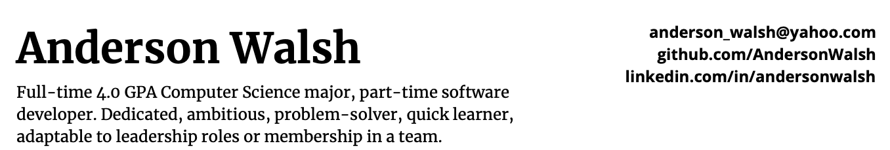
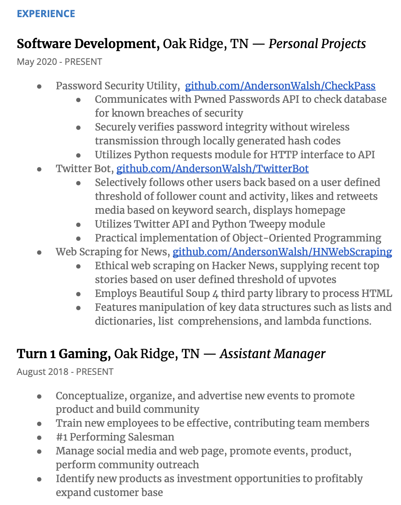
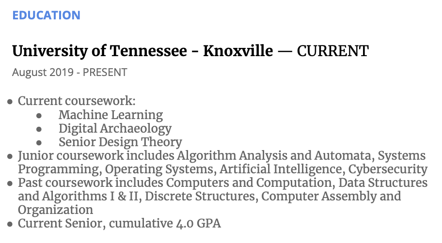
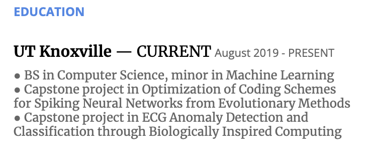
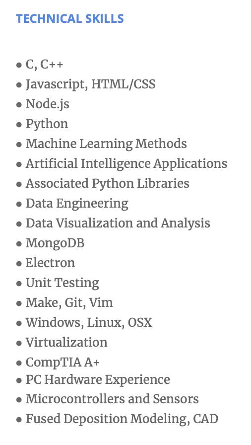
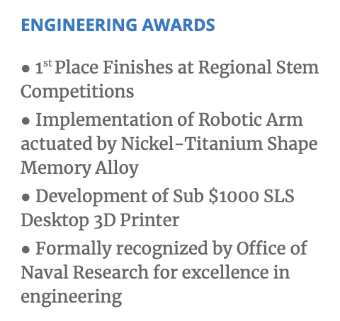
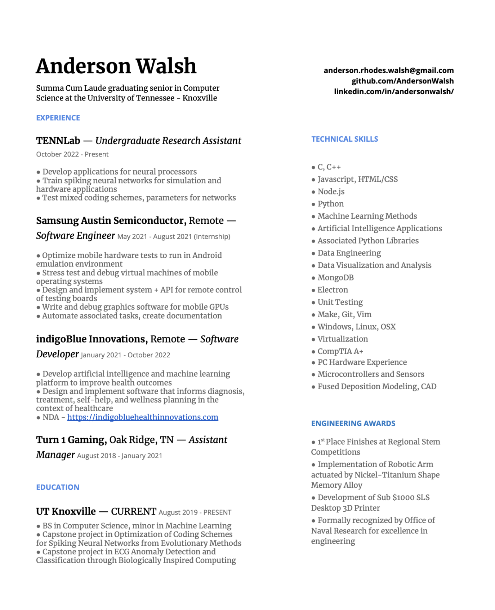

Software Engineering - How to Build an Effective Resume, and Why You NEED to do it
Securing your first entry level position in the software industry as an engineer is a daunting task. Almost universally, every position one might apply to lists months or years of experience as a prerequisite. This holds true even for introductory positions like internships. How are you ever supposed to get experience in the first place? This makes your first software engineering (SWE) position the most important, and the most difficult to find.
This article is instructional, guiding you in the most key element to jumping this first and largest hurdle of breaking into the profession: creating a professional and effective resume that will catch the eye of recruiters. It will also provide in-depth analysis regarding the importance in mastering the art of crafting an effective resume. Speaking from experience, I can assure you that with some grit and persistence, you will make it through the door.
Motivation - What Makes a Resume so Important?
Here, we’re assuming that you are operating under the least advantageous circumstances: having no connections in the industry, no potential for a nepotism hire, and no one in your network to get you in front of a human being for an interview. This is the position from which I secured my first position in industry working with Samsung Austin Semiconductor as a software engineer.
Good networking, connections with people already in the SWE industry, is the most effective means of securing employment. Building a network from the ground up is a crucial task that one iterates on over time. It is possible to do so, or at least get started, without having had a formal position; but this is a topic for another article. Operating without a network renders one’s resume the most important factor in finding gainful employment.
Without a network, your options for getting in front of a potential employer are:
-
Submitting online applications
-
Walking in to a physical company location
Both of these routes revolve around your resume as the primary tool with which you can convey your expertise and merits as a potential employee. Getting in front of a human being is the objective of a resume; once you’ve caught a recruiter, human resources member, or engineer’s eye, your likelihood of getting hired goes up exponentially. It is much more difficult to ignore someone right in front of you, than a digital document submitted alongside dozens, hundreds, or even thousands of others. However, even in the case of having access to a company location, the best you’ll get is more than likely a promise to view your physical resume and possibly be called for an interview at a later date. For most people the reality is that
You don’t have access to a physical company location
The advent of remote work has killed the “office”, both in concept and in practice. Many companies forego a physical office to avoid the incurred cost of a location entirely. On the bright side, this has opened up a lot of opportunity to expand the breadth of possible jobs for engineers. Even if a position isn’t advertised as remote, you can submit an application and advocate your ability to work remotely. You don’t have to have geographical proximity to a company to work for them. Understanding this makes the world your oyster; but the same is true for your competition.

The pool of competition is staggering
The popularity of computer science or SWE as a college major is skyrocketing. Even more problematic is the new business model that’s arisen from the “just learn to code” sentiment: bootcamps. SWE bootcamps churn out applicants at a problematic rate, rapidly increasing the volume of people applying for entry level SWE positions.
Without access to a company location or industry connections, and with the goal of capitalizing on remote work opportunities in mind, it becomes clear that your resume is the single most key influencing factor on your chances of getting an entry level software engineering position.
Motivation - Why do I Need to Optimize my Resume?
Iteratively developing, optimizing, and targeting your resume for specific roles gives you the best chance of getting an interview. Interviewing is another skill of the utmost importance, but again, a subject for a future article. The goal of your resume is to get you in front of a person. This accomplishes several things:
-
It establishes you as a top contending candidate for a position
-
It yields the opportunity to discuss and account for your lack of experience
-
You get a chance to draw attention towards advocating your merits and display your technical skills
-
Any non-professional experience that may otherwise have been overlooked can be emphasized
-
Interpersonal skills can be utilized to sway interviewers
Perception is more than half the battle. With online applications being one’s primary means of creating job opportunity, a resume is the first thing recruiters or hiring staff will evaluate. Remember, the volume of applicants in the modern day is enormous. Accordingly:
Your resume has about 10 seconds to capture a recruiter’s attention
The first impression your resume establishes is often the only one. The majority of resumes have under 30 seconds before they hit the garbage can. Going through stacks of resumes, recruiters will slide them into the bin without hesitation based on any number of superficial metrics:
-
Text is too small
-
Unprofessional appearance
-
Absence of certain keywords
-
Usage of improper dialogue
-
Missing sections of critical information
-
Too long
-
And many more
Your resume has to be carefully constructed to make that first impression a big win. With the limited time frame one has to make a splash, resume contents must be carefully selected for brevity. After the 10 second mark, you’ve passed the first round of applicant filtering. But then, the importance of content goes beyond the superficial.
Resumes are evaluated by non-technical staff first, but the engineers are next
After a round of weeding by non-technical staff, individuals who are simply applying those metrics to downsize the applicant pool, one or more engineers will evaluate your resume more critically. Here, those aforementioned details are even more pivotal. The technical skills and personal experience you convey, the manner in which these things are documented, suddenly every facet of this document is under a microscope. You have limited time and limited space to impress two distinct audiences, to the point that both parties think it worthwhile to spend company resources on an interview.
The job application process is a numbers game
You will not achieve universal success in getting through both stages of applicant filtration. Sometimes, the personal bias of whomever is viewing your resume will remove you from the pool. Others, your technical skills will not perfectly aline with the position to which you’ve applied. Often, your resume will be overlooked even when it’s well made. All that is within your power to do is make your resume of the highest possible impact when it gets attention, and submit as many applications as possible to get eyes on you.
In practice, I produced 3 or 4 dozen iterations of my resume over the course of 3 months of job application submission. Over those 3 months, I submitted thousands of online applications. Again, it’s a numbers game. Getting a job in this manner is probabilistic. You have to maximize your odds by optimizing the factors within your control. The output I got from that volume of applications, coming from a position of nothing but personal experience and no credentials academic or otherwise, was 6 interviews. 5 of them were conducted by software autonomously; video recordings of me responding to timed prompts. Exactly 1 took place as a conversation with another person. That person was a senior engineer at the Samsung Research Center. The end product of my interview: a position as a Junior Software Engineer compensated at \$70,000 a year.
Following this guide, I will show you the steps to craft a resume that can produce similar outcomes for you, along with crucial pitfalls to avoid, through the lens of my own resume iterations and experience.

Resume Section Overview
Foremost, it is critical to understand the core components of an engineer’s resume. Neglecting to include any of these will result in your resume missing key information that recruiting staff wants to see. They can be broken into sections, and are as following:
-
Headline and Personal Statement
-
Experience
-
Education
-
Technical Skills
-
Miscellaneous X Factors
It’s that simple. The complexity lies in the nuance, implementation details, and possible mistakes related to each of these sections.
Headline and Personal Statement
In your headline and personal statement, you’ll include key information, both practical and subjective. This section may seem insignificant and intuitive to develop at a glance. In actuality, it is one of the most decisive aspects of your resume, with many nuances and potential traps.
First and Last Name
This sounds obvious and superflous to emphasize, but it is a key point in which pitfalls lie. Your name should be the most prominent feature on your resume. The text should be left justified, the largest font on your resume by a factor of around 3, and in bold. This catches focus, personalizes the document, and draws recruiters towards the other element of a resume intended to evoke investment at a more intimate level (your personal statement). Formatting more broadly is discussed at the end of the article, as outside of this benchmark, graphical design choices become more flexible.
Personal Statement
A personal statement is a very brief description of what you are and your positive professional characteristics. This should NOT be an extended at-length analysis of one’s personality and in-depth experience. Again, recruiters need to see something digestible. The goal here is less to convey features of one’s own person. Rather, you want to describe yourself in terms of the buzzwords that stand out to HR hiring staff, which might otherwise be included in a separate “soft skills” section. This serves two purposes:
-
Space is saved for more important, quantitative information
-
The presentation of these features come across as an affirmative statement
Soft skills are important to HR, but not to engineering staff at a glance. Prominently displaying these aspects in one’s own words, while maintaining consistency with popular corporate sentiment, allows you to maximize the area of your resume dedicated to information that isn’t qualitative or fluffy. Simultaneously, this keeps soft skills prominent on a resume, strongly attributing them to one’s own character. Most importantly, these soft skills are stated in close proximity to the region HR will be looking at first. Finally, this means of conveying soft skills is more convincing than providing a weak and blatantly subjective list elsewhere.
The personal statement also serves to include a definition of what you are, or in other words, an implicit statement of the role which you hope to fill. A personal statement should be left justified, aligned directly under your name, in a font consistent with the rest of the page.
Contact Information and Online Presence
Right justified at the top of your headline should be your email, a URL to your LinkedIn page, a URL to your GitHub page, and optionally, your phone number. A common mistake here is to include an address. No company in the 21st century is going to reach out to you via carrier pigeon. An address is unnecessary information to disclose. It overcrowds the section and opens up the possibility of invoking potential bias on behalf of a recruiter against the city or state in which you live. Outside of such biases, disclosing your address reveals your distance from a company where remote work opportunities may lie. Residing in another time zone from different workers while working for a company, or otherwise incurring the expense of relocation should you be hired are two objective metrics by which disclosing your address can harm your hiring chances. A phone number is simply unnecessary by and large. It is much more likely that a company will reach out with a canned email than a personalized phone call.
In respect to email: your professional email should be a Gmail address that exclusively consists of your name, and ‘.’ or ’_’ characters. Gmail is the industry standard. Other providers may be viewed as outdated or deprecated. The presentation of one’s name is most important. Nicknames, internet pseudonyms, and random sequences of numbers are all red flags to employers in respect to professionalism. Even including your birth year should be avoided; ageism is rampant in the tech industry. If necessary to produce a unique address, include your middle name somewhere in your email address.
LinkedIn and GitHub pages are evidence that show HR you are indeed a human being. Putting a face to your name, in an indirect, professional capacity, is desirable should your resume and the claims therein come under closer scrutinty. The layer of abstraction a resume provides over your LinkedIn profile is actually valuable. A LinkedIn profile picture is effective in establishing yourself, but also presents another opportunity for personal biases to work against you. Regardless of a recruiter’s consciously held beliefs, it is very likely they have a bias relating to appearance in some capacity. Hence, your picture being made available following the consumption of your resume (implying some level of investment on behalf of the recruiter) decreases the likelihood that you’ll be dismissed as an applicant with a flick of the wrist.
A LinkedIn page is also an opportunity to expand on details, further documenting and affirming the skills and experience described in your resume. GitHub pages once more reinforce your online presence, and function visibly as a portfolio. This both documents your activity as a developer and any personal projects or contributions to larger works. To engineering staff, activity on GitHub very importantly demonstrates competent usage of version control as a tool, one of the most essential skills for a software engineer.
Your online presence should not be a personal Facebook, Twitter, TikTok, or other social media page. These sources are not a positive means through which to meet the ends of LinkedIn and GitHub pages. Companies don’t care about your personal life or recreation. Quite the contrary, public visibility of these outlets can only serve to your detriment. It is highly likely that somewhere in your personal social media lies something a company would frown on, be it a political opinion, aspect of personal conduct, or otherwise. There is no upside in publicizing personal social media. If you don’t have a LinkedIn or GitHub page, establishing that positive form of online presence will be covered in another article.
Combining these ideas, this is the headline and personal statement section of my current resume.

Experience
Your experience section may be difficult to fill. After all, we’re tackling this problem from the position of having no professional experience in SWE industry. Professional is the operative word here.
Your relevant experience for a software position is not limited to past or present jobs
In fact, the opposite is true. Without professional experience to speak on, you need to have personal experience that demonstrates your proficiency in software engineering. If you don’t have personal experience to draw from, you probably aren’t ready to be applying to entry level positions or internships. This is not intended to be condemning or prohibitive. It is simply fact that without some display of technical experience, the likelihood of success in your job search drastically decreases. Therefore, it is in your interest to be liberal in what qualifies as “experience”. Qualifying personal experience can extend to many areas should they have involved software engineering, including:
-
Noteworthy academic works
-
Personal projects
-
Contributions to other open source projects
Your list of experience should be displayed in order of significance for the position to which you are applying. For example, should you be applying to a position in the cybersecurity sector, a simple password checking utility made in a day may be worth putting at the top of an experience section as opposed to a larger work. Not having sufficient experience to necessitate sorting is acceptable, but ideally, what few instances of experience there are should be of some substance. Experience should be formatted as separate headlines per position or project. The employer and formal job title should be listed most prominently, even if it may seem strange to self designate the job title “software engineer” for a personal project. The keywords “software engineer” or “software developer” are being scanned for by recruiters, and must be on your resume to some extent. Time spent in the position, or on the project, should be documented directly below the label. Do not give exact days, just the month and year. Give yourself credit for the whole month on each end of the time period.
Further information regarding your experience should be documented below the date in the form of bullet points and incomplete sentences. Incomplete sentences serve to conserve resume real estate, but also consolidate the focus of your statement to the most relevant details. These details regarding what you did and accomplished should be discussed in present tense action verbs. This serves to emphasize personal responsibility, the significance of your work, and facilitate a more compelling, definitive representation of your capabilities.
In describing your experience, where possible, speak in quantitative metrics. For example, “Advertising new product to promote widespread adoption” would be better served as “Advertised new product increasing sales by 30%”. It is acceptable in this context to speak in the past tense, but still the third person. Quantitative metrics reinforce the strength of your claims and accomplishments, showing definitive, quantifying, practical measures of performance.
An extensive history of every position you’ve held in areas irrelevant to software need not be included or expounded on, unless they serve to fill employment gaps. Alternatively, exceptions can be made for positions that speak to soft skills. In practice, I myself had management experience in retail to provide as professional experience. Management experience in particular shows highly sought after leadership and communication skills. There was also visible overlap in my work and education timelines. Implicitly, this demonstrates education taking place concurrently with a job, which can signify a high level of capability and work ethic. This is an early iteration of my resume showing an experience section that documents both personal projects and my job. For the management experience, notice how I provide quantitative metrics and activities that display highly valued soft skills.

Education
Any credentials related to technology, including technical certifications should be included here. That is to say, this section is not limited to college degrees. There are relevant educational experiences outside of academia that can be meaningful to show. Having a Bachelor’s degree or higher in computer science or software engineering is a massive strength for a resume. For these types of credentials, similar to the experience section, strengthen this area with bulleted statements listing pertinent details. For a formal college degree, this can be a list of coursework most notable for the position, or significant capstone projects not covered in the experience section. For a certification, this can be a list of the means through which items in the upcoming Technical Skills section were learned. For example, if “Operating Systems” is listed in technical skills, and education consists of a COMPTIA A+ certification, one might write “Repair of personal computers” and list the methods or types of repairs.
If your college degree is in progress, and you are applying to internships, simply qualify that your degree is in progress. If your degree is unfinished and you are no longer pursuing it, still list your educational institution and your major; simply omit any claim to a formal credential such as “Bachelor’s of Science”. Only list coursework or relevant projects. In general, don’t give a timeline of your college degree whatsoever outside of a completion date if you have one. Otherwise, this is another opportunity to give away one’s age, an issue to be avoided.
If you have a college degree in a topic unrelated to software engineering or computer science, it can still be valuable to include on a resume. Employers see value in the wherewithal to see a degree through to the end; just keep the related details brief, or leave them out entirely.
Do not include high school education unless that is the only applicable credential you have. If coursework pertaining to technology was taken, that can be listed here. However, at the level of high school education, it is more productive to pad the experience section, drawing attention away from the lack of a college credential. There is no shame in not having a college degree. However, employers almost universally list a 4 year degree or higher as a requirement on job applications. Without such a degree, it is critical to accentuate other pertinent qualifying factors in the experience section.
Below is a snapshot of my resume partway through my degree program that simply lists college coursework. Then, my current resume that shows my more substantive capstone projects.

Technical Skills
This and the experience section are the most important for the discerning eye of engineers conducting hiring. Be generous when designating what qualifies as proficiency to call a technical skill your own. If you have any experience in the subject whatsoever, it’s appropriate to include here. That is, assuming you are confident in your ability to become more proficient should a given position require it. Do not attempt to rate your degree of proficiency in a given area. Let an interviewer judge how proficient you are in a given topic. To do so yourself is:
-
Subjective by nature
-
Opens the opportunity to underrate oneself in a desirable skill
-
Opens the opportunity to create elevated expectations on behalf of a prospective interviewer
Impressing an interviewer is always better than struggling to meet inadvertently set expectations.
Given a sufficient volume of technical skills, it can be ideal to limit the technical skills section based on the skillset a company is seeking for a particular position. Alternatively, in the case of having relatively few technical skills, or if one’s preference is to represent a breadth of expertise, most or all technical skills can be listed here so long as they aren’t superfluous; most positions in SWE are indifferent to Microsoft Word experience. Essentially, draw attention to technical skills of note here. In the event of providing a more comprehensive list of technical skills, do make sure to place them in descending order of relevance for a given position.
This is my most recent technical skills section. I have by and large continually expanded on the category. My personal preference is toward showing a breadth of knowledge as opposed to a specialization.

Miscellaneous X Factors
There may be compelling things to advertise on your resume that don’t fit into the aforementioned sections. This is highly contextual based on the position on the receiving end of your resume, so it’s difficult to speak in general terms on the subject. So, as a general rule: reflect on past experiences, circumstances, or otherwise that an employer might find appealing. This is most commonly going to entail accolades or membership in organizations. Label your “X Factors” section with a suitable, professional title.
A recurring theme: this is a dangerous category for pitfalls. Recruiter bias is once more the primary danger here. Even something innocuous, such as community service could be frowned on by a given recruiter for any number of reasons. The rule of thumb here is to keep the section sterile in respect to anything that may involve social stigma or political sentiment. It is acceptable to omit this section entirely when in doubt. This is simply a secondary opportunity to apply a personal touch to a resume, while maintaining appearances.
To be clear: hobbies do not constitute X factors. Employers are looking for disqualifying factors as much as qualifying ones. Avoid discussing recreation and personal interests. They are of no interest to a given company.
This is my “X Factors” section, labeled “Engineering Awards”. It has remained untouched since the first iteration of my resume. These are accolades I received a long time ago early on in my computer science pursuits. Employers don’t have to know the age of these awards; their recency is irrelevant if they sound interesting. Notably, my robotic arm project was of significant interest to Samsung and came up in my interview. It’s conjecture on my behalf, but I believe that inclusion on my resume may have secured the position.

General Resume Principals of a Good Resume and Pitfalls
It’s important to adhere to some best practices in resume writing. Many of those practices have already been touched on throughout prior sections. A few notable practices that have not been discussed will be briefly covered here.
Design Choices
It is important to choose a single, cohesive design for a resume. All black, center justified text may intuitively seem most professioonal, but this is in reality quite bland. It’s important to simultaneously maintain a professional appearance, while also standing out from the crowd of other resumes. There is a lot of flexibility here, and personal preference comes in to play. I enjoy a 2 column format with a splash of one calming highlight color.
In respect to maintaining professional appearance, don’t go to overboard on graphical design elements. Black text with a shared size is appropriate for most of your resume. Font style should be universal in most cases. Exceptions can be made for labels of sections. Usage of bold and italics to differentiate notable aspects of items in the education and experience section, such as company, job title, etc can be engaging.
The most important rule is to maintain cohesion and professionalism when in doubt. But, try to produce a resume that isn’t completely dry.
Targeting for an Audience
Honing your resume for a particular position can greatly increase your chances of catching HR’s eye, and has been alluded to many times throughout the article. Limiting your technical skills to a hand picked subset, emphasizing different aspects of job experience or education, and expounding different soft skills in a personal statement can all be productive areas to target your resume for submission to a specific employer. This ties into the following point.
Page Count and Overcrowding
No recruiter is ever going to look past the first page of your resume. The tie in with targeting is that, should you have too much to fit on your resume, trim it down situationally. It’s fine to have a generalized copy, even one that’s too large. But be sure to get the final product for submission to a given prospective employer down to 1 page. Beyond the second page being a waste, the perceived burden of the second page being present at all increases the likelihood of a resume being quickly dismissed.
Focus your resume. Keep in mind here, this does not mean use 6 point font to jam everything into 1 page. The absolute minimum font size one should utilize is 8, and ideally larger. Recruiters need to be able to comfortably read your resume at a glance. Otherwise, your 10 seconds will turn into 0 in a flash.
Dialogue
It is worth restating that the 3rd person should be utilized universally in one’s resume. This serves to uphold the professional appearance. At the same time, your personal statement, documentation of experience, and education will sound more like objective fact than firsthand anecdote. A resume written in the 3rd person reads more formally, and is more authoritative.
Sample - My Resume
This is my full resume as it is today, to illustrate all of these points interlocked.

Note that I have specified where applicable where I worked remotely to increase the likelihood of otherwise in-person positions being open to remote work.
Closing Thoughts
I hope this gave you some insight on how best to write a resume that will maximize your chances of securing an first entry level position in software engineering. Particularly for those without access to a network, crafting an effective resume is one, if not the most, decisive factors in job prospects in SWE industry. A resume is your most vital tool for getting in front of an interviewer. Once you're more than a piece of paper to a company, your odds of getting hired go up exponentially. Following the principles conveyed in this article, you'll make an eye catching resume that will, given persistence, get a recruiter's attention and secure an interview. I know you can make it! Best of luck to all of you with the endurance to have seen this article through. Look forward to future articles on complimenting your resume with a cover letter, building a network, creating an online presence and more.